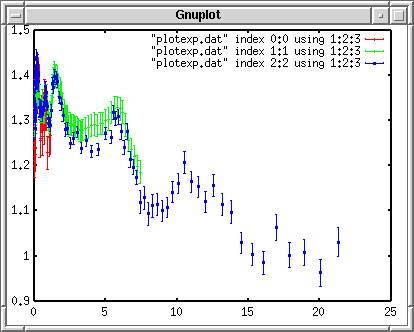
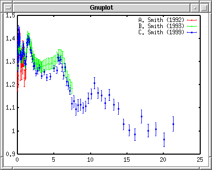
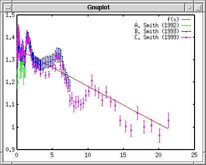
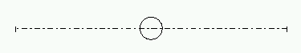
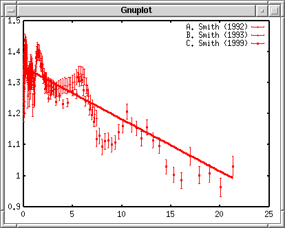
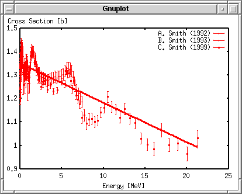
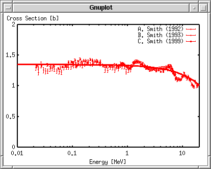
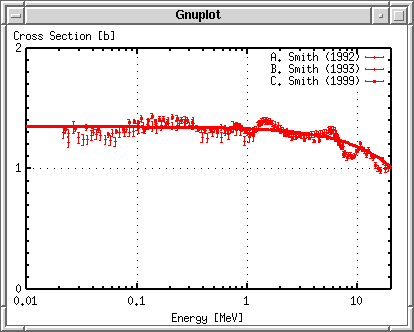
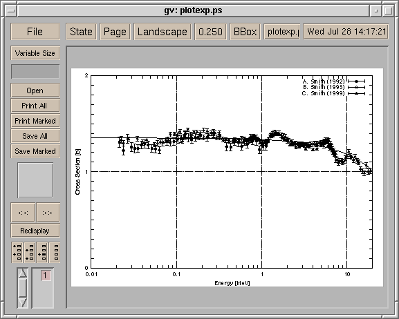

<!DOCTYPE HTML PUBLIC "-//W3C//DTD HTML 4.01 Transitional//EN">
<html lang="ja">
<head>
<title> gnuplot / intro / plotexp </title>
<!-- Generated 1999/ 7/28  -->
<!-- $Id: plotexp.html,v 1.13 2004/12/21 06:52:00 kawano Exp $ -->
<meta http-equiv="content-type" content="text/html;charset=iso-2022-jp">
<link rel="stylesheet" href="../style-new.css" type="text/css">
</head>
<body>

<table width="100%" border="0" cellpadding="0" cellspacing="0">
<tr><td bgcolor="#cccc90" width="320">
    <div align="left">
    <a href="../index.html">
    
    </a></div></td>
    <td bgcolor="#cccc90">
      <div align="center"><h3> - not so Frequently Asked Questions - </h3> </div>
      <div class="update"> update 2004/8/31 </div>
    </td>
</tr>
<tr><td bgcolor="#fae8ba"></td>
    <td bgcolor="#fae8ba"><div class="navi"> 
<a href="../index.html">          HOME </a> |
                                  INTRODUCTION |
<a href="../general.html">        INFORMATION </a> |
<a href="../gallery/index.html">  GALLERY </a> |
<a href="plotexp-e.html">         ENGLISH </a>
</div></td></tr>
</table>
<hr class="topsep">


<table width="100%" border="0" cellpadding="0" cellspacing="0">
<tr><td id="menu">
 <p> <a href="index.html">   gnuplot$BF~Lg(B  </a></p>
 <ul>
  <li> <a href="basic.html">   $B4pK\$N4pK\JT(B  </a>
  <li> <a href="plotcalc.html">$B?tCM7W;;JT(B </a>
  <li> <a href="plotexp.html"> $B<B83%G!<%?JT(B </a>
    <ul>
     <li> <a href="plotexp.html#data">      $B%G!<%?$N=`Hw(B </a>
     <li> <a href="plotexp.html#dataplot">  $B%G!<%?$NAH(B </a>
     <li> <a href="plotexp.html#title">     $BK^Nc(B </a>
     <li> <a href="plotexp.html#overlay">   $B7W;;CM(B </a>
     <li> <a href="plotexp.html#linestyle"> $B@~<o(B </a>
     <li> <a href="plotexp.html#label">     $B<4L>(B </a>
     <li> <a href="plotexp.html#range">     $BI=<(HO0O(B </a>
     <li> <a href="plotexp.html#tics">      $BL\@9(B </a>
     <li> <a href="plotexp.html#done">      Postscript$B=PNO(B </a>
    </ul>
  <li> <a href="plotfunc.html">$B4X?tI=<(JT(B </a>
  <li> <a href="working.html"> $B@83hJT(B </a>
  <li> <a href="style.html">   $B%9%?%$%k0lMw(B </a>
 </ul>
</td>

<td id="content">


<h1><a name="top"> gnuplot $BF~Lg(B --- $B<B83%G!<%?JT(B </a></h1>


<h2><a name="data">$B$^$:$O%G!<%?%U%!%$%k$N=`Hw(B </a></h2>

<p> $B%U%!%$%k$K=q$+$l$?<B83%G!<%?$r%W%m%C%H$7!$$=$3$K2r@O2r$r=E$M$FI=<((B
$B$7$F$_$^$7$g$&!%<B83%G!<%?$O(B3$B$D$N%;%C%H$,$"$j!$$R$H$D$N%U%!%$%k$KB3$1(B
$B$F=q$+$l$F$$$^$9!%3F%G!<%?$N%V%m%C%/$N4V$K$O(B2$B9T$N6u9T$r$$$l$F$"$j$^$9!%(B
$B%G!<%?E@$O!$(BX$B:BI8(B($B%(%M%k%.!<(B)$B!$(BY$B:BI8(B($BB,DjCM(B)$B!$(BY$B$N8m:9$N(B3$B$D$NAH$GM?$($i(B
$B$l$F$$$^$9!%8m:9$O@dBPCM$GM?$($^$9(B($B$D$^$jB,DjCM$HF1$8C10L$r;}$C$F$$$k(B
$B$H$$$&$3$H(B)$B!%(B#$B$G;O$^$k9T$OL5;k$5$l$^$9!%(B</p>

<pre class="file">
# Data No. 1
 2.1500E-02 1.3060E+00 5.3098E-02
 2.3900E-02 1.2220E+00 4.7043E-02
 2.6800E-02 1.3430E+00 4.9854E-02
 2.9700E-02 1.2580E+00 4.5860E-02
 3.2500E-02 1.2430E+00 4.4506E-02
               ....
 9.4500E-01 1.2290E+00 3.7317E-02
 1.0350E+00 1.2630E+00 4.1449E-02
 1.1330E+00 1.2670E+00 4.2289E-02


# Data No. 2
 2.4000E-02 1.2970E+00 3.1387E-02
 4.0000E-02 1.3060E+00 2.8993E-02
 6.0000E-02 1.2960E+00 2.8382E-02
 8.0000E-02 1.3300E+00 2.8728E-02
              ....
 7.0000E+00 1.2210E+00 2.5031E-02
 7.2000E+00 1.1990E+00 2.5299E-02
 7.4000E+00 1.1860E+00 2.5618E-02


# Data No.3
 2.2500E-02 1.3310E+00 3.4606E-02
 2.7500E-02 1.3370E+00 2.4066E-02
 3.5000E-02 1.3440E+00 2.6880E-02
              ....
 1.8936E+01 1.0080E+00 2.9232E-02
 2.0064E+01 9.6300E-01 2.9853E-02
 2.1296E+01 1.0310E+00 3.1961E-02
</pre>


<div class="top"><a href="plotexp.html#top"></a></div>
<h2><a name="dataplot">$B%G!<%?$NAH$r%W%m%C%H(B</a></h2>

<p> $B$3$N(B3$BAH$N%G!<%?$r:G>.<+>hK!$GD>@~6a;w$9$k$H!$(By = -0.01687 x +
1.3512 $B$H$J$j$^$9!%<B83%G!<%?$H$3$N<0$K$h$k7W;;CM$r=E$M$F%W%m%C%H$7$^(B
$B$7$g$&!%<B83%G!<%?$NF~$C$?%U%!%$%k$r(B<a href="plotexp.dat"> plotexp.dat
</a> $B$H$7$F$*$-$^$9!%0l$D$N%U%!%$%k$K=q$+$l$?(B3$B$D$N<B83%G!<%?$N%V%m%C%/(B
$B$O!$(B<tt>index</tt>$B$r;H$C$F$P$i$P$i$K%"%/%;%9$9$k$3$H$,$G$-$^$9!%(B
<tt>index 0:0</tt> $B$b$7$/$O(B<tt>index 0</tt>$B$J$i0lHV:G=i$N%G!<%?!$(B
<tt>index 2:2</tt>$B$b$7$/$O(B<tt>index 2</tt> $B$J$i(B3$BHVL\$N%G!<%?$G$9!%(B
<tt>index 0:1</tt>$B$H$9$k$H!$(B1$B$H(B2$B$N%G!<%?$r9g$o$;$?$b$N$K$J$j$^$9!%(B</p>

<p>$B8m:9IU$-$N%G!<%?$r%W%m%C%H$9$k$K$O!$(B<tt>with yerrorbars</tt>$B$r;H$$$^$9!%(B
$B8m:9$NCM$,I,MW$J$N$G!$%G!<%?%U%!%$%k$O(B3$B%+%i%`$"$j!$(B<tt>using
1:2:3</tt> $B$H$7$F$=$N(B3$B$D$rFI$_9~$_$^$9!%8m:9$N?tCM$,(B%$B$GM?$($i$l$F$$$k(B
$B>l9g$O!$(B<tt>using 1:2:($2*$3/100.0)</tt> $B$H$9$l$P@dBPCM$KJQ49$G$-$^$9!%(B
</p>

<pre class="sample">
gnuplot&gt; plot "plotexp.dat" index 0:0 using 1:2:3 with yerrorbars,\
&gt; "plotexp.dat" index 1:1 using 1:2:3 with yerrorbars,\
&gt; "plotexp.dat" index 2:2 using 1:2:3 with yerrorbars
</pre>

<div align="center"></div>

<p> $BF~NO9T$,D9$$$H$-$O!$(B\($B!o5-9f!$$b$7$/$O%P%C%/%9%i%C%7%e(B)$B$r9TKv$K$$(B
$B$l$k$H!$<!$N9T$b7QB39T$H$_$J$5$l$^$9!%9T$,D9$$$H$-$O!$%-!<%o!<%I(B
$B$N>JN,7A$r;H$&$HJXMx$G$9!%(Bwith $B$O(B w$B$@$1!$(Bindex$B$O(Bi$B$@$1!$$H8@$&Iw$K(B
$BC;$/$7$FF~NO$G$-$^$9!%$I$3$^$G>JN,$G$-$k$+$O%-!<%o!<%IKh$K0c$&$N$G!$(B
$BE,Ev$K;n$7$F$_$F$/$@$5$$!%$A$J$_$K%U%!%$%kL>$N>JN,$b2DG=$G$9!%0lEYM?$($?(B
$B%U%!%$%kL>$r(Bgnuplot$B$O3P$($F$$$^$9$N$G!$>e$N$h$&$K(B"plotexp.dat"$B$,(B3$B2s$b(B
$B=P$FMh$k>l9g$O!$2<$N(B2$B$D$O(B "" $B$HN,$9$3$H$,$G$-$^$9!%(B</p>


<div class="top"><a href="plotexp.html#top"></a></div>
<h2><a name="title">$BK^Nc$r$D$1$k(B</a></h2>

<p> $B?^$NK^Nc$,3f9%0-$$$N$G!$3F%G!<%?$KI=Bj$rIU$1$F$_$^$7$g$&!%(B
$B:G=i$N%G!<%?$K!$(B"A. Smith (1992)", $B<!$N$b$N$r(B "B. Smith (1993)",
$B$=$7$F:G8e$N$r(B "C. Smith (1999)"$B$H$7$^$9!%(B</p>

<pre class="sample">
gnuplot&gt; plot "plotexp.dat" ind 0:0 usi 1:2:3 ti "A. Smith (1992)" w yerr,\
&gt; "plotexp.dat" ind 1:1 usi 1:2:3 ti "B. Smith (1993)" w yerr,\
&gt; "plotexp.dat" ind 2:2 usi 1:2:3 ti "C. Smith (1999)" w yerr
</pre>

<div align="center"></div>


<div class="top"><a href="plotexp.html#top"></a></div>
<h2><a name="overlay">$B7W;;CM$r=E$M$k(B</a></h2>

<p> $B4X?t$r=E$M$F%W%m%C%H$9$k$K$O!$;O$a$K4X?t$rDj5A$7$F$*$/$N$,JXMx$G$9!%(B
$B:G>.<+>hK!$GF@$i$l$?D>@~$r(B f(x) =  -0.01687*x +1.3512 $B$GM?$($F$*$-!$$=$l$r(B
$B%W%m%C%H$7$^$7$g$&!%(B</p>

<pre class="sample">
gnuplot&gt; f(x)= -0.01687*x + 1.3512
gnuplot&gt; plot f(x) with lines, \
&gt; "plotexp.dat" ind 0:0 usi 1:2:3 ti "A. Smith (1992)" w yerr,\
&gt; "plotexp.dat" ind 1:1 usi 1:2:3 ti "B. Smith (1993)" w yerr,\
&gt; "plotexp.dat" ind 2:2 usi 1:2:3 ti "C. Smith (1999)" w yerr
</pre>

<div align="center"></div>

<p> $BD>@~$r0lHV;O$a$K$$$l$?$N$G!$%G!<%?I=<($K;H$o$l$k@~<o$,0l$D$:$l(B
$B$^$9!%(B</p>


<div class="top"><a href="plotexp.html#top"></a></div>
<h2><a name="linestyle">$B@~<o$rJQ$($k(B</a></h2>

<p> $B%&%#%s%I%&$KI=<($9$k$K$O!$?'$,JQ$o$C$F$$$kJ}$,8+$d$9$$$N$G$9$,!$$3(B
$B$l$r(BPostScript$B$K$7$F0u:~$9$k$H!$$A$g$C$H:$$C$?$3$H$,5/$3$j$^$9!%D>@~$O(B
1$BHV$N@~<o$GIA$+$l$F$*$j!$(BPostScript$B$K$9$k$H!$(B1$BHV$O<B@~$K$J$j$^$9!%<!$N(B
3$B$D$N%G!<%?$O(B2,3,4$B$N@~<o$K$J$C$F$*$j!$(BPostScript$B$G$OE@@~$dGK@~$K$J$j$^(B
$B$9!%=>$C$F!$$3$N$^$^$G$O!$8m:9K@$,E@@~$dGK@~$GIA$+$l$F$7$^$$$^$9!%(B</p>

<div align="center"></div>

<p>$B$3$l$G$O:$$k$N$G!$@~<o$O<B@~$N$^$^$G5-9f$@$1$rJQ$($k$h$&$K$7$^$9!%(B
$B$=$l$K$O(Blinestyle$B$rDj5A$7$^$9(B(ver.3.7$B0JA0(B)$B!%(B</p>


<pre class="sample">
gnuplot&gt; set linestyle 1 lt 1 lw 3
gnuplot&gt; set linestyle 2 lt 1 pt 7
gnuplot&gt; set linestyle 3 lt 1 pt 8
gnuplot&gt; set linestyle 4 lt 1 pt 9
</pre>

<p>[3.8/4.0] Ver.3.8$B0J9_$N(Bgnuplot$B$N>l9g$O!$0J2<$N$h$&$K;XDj$7$^$9!%(B</p>

<pre class="sample">
gnuplot&gt; set style line 1 lt 1 lw 3
gnuplot&gt; set style line 2 lt 1 pt 7
gnuplot&gt; set style line 3 lt 1 pt 8
gnuplot&gt; set style line 4 lt 1 pt 9
</pre>

<p> linestyle$B$N(B1$BHV$H$7$F!$@~I}$r(B3$B$N<B@~$rDj5A$7$F$^$9!%<!$N(B2$B!A(B4$B$G$O@~(B
$B<o$H$7$F$O(B1$BHV$N<B@~$r;H$$!$5-9f(B($B%]%$%s%H(B)$B$K(B7,8,9$B$r3d$jEv$F$F$$$^$9!%$3(B
$B$l$i$r;H$C$F%W%m%C%H$9$k$K$O!$(Bwith$B$N(Bstyle$B$N8e$K(Blinestyle$B$r=q$-!$$=$N8e(B
$B$K;H$&HV9f$rM?$($^$9!%(B</p>

<pre  class="sample">
gnuplot&gt; f(x)= -0.01687*x + 1.3512
gnuplot&gt; plot f(x) notitle with lines linestyle 1, \
&gt; "plotexp.dat" ind 0:0 usi 1:2:3 ti "A. Smith (1992)" w yerr linestyle 2,\ 
&gt; "plotexp.dat" ind 1:1 usi 1:2:3 ti "B. Smith (1993)" w yerr linestyle 3,\
&gt; "plotexp.dat" ind 2:2 usi 1:2:3 ti "C. Smith (1999)" w yerr linestyle 4
</pre>

<div align="center"></div>


<div class="top"><a href="plotexp.html#top"></a></div>
<h2><a name="label">$B<4L>$rF~$l$k(B </a></h2>


<p> $BD>@~$NK^Nc$O!$(Bnotitle$B$r;H$C$F>C$7$F$7$^$$$^$7$?!%%G!<%?I=<($K4X$9(B
$B$kItJ,$O!$$3$3$^$G$G$[$\=*$j$G$9!%%&%#%s%I%&I=<($N>l9g$O!$A4It@V?'$K$J$C(B
$B$F$7$^$$8+$E$i$$$G$9$,!$0u:~$9$k$^$G$N?IJz$G$9!%8e$O!$?^$N%_%F%/%l$rJQ(B
$B$($F$$$/$@$1$G$9!%(B</p>

<p> $B?^$K(BX$B$H(BY$B<4$NL>A0$rF~$l$^$9!%(BX$B<4$O(B "Energy [MeV]" $B$H$7$^$7$g$&!%$^(B
$B$?(BY$B<4$K$O(B "Cross Section [b]" $B$HF~$l$F$_$^$7$g$&!%<4$N@_Dj$K$O!$(Bset
xlabel$B$H(Bset ylabel$B$r;H$$$^$9!%(Breplot$B$r;H$&$H!$%W%m%C%H$7$?$b$N$HF1$8$b(B
$B$N$r$b$&0lEY%W%m%C%H$7D>$7$^$9$N$G!$@hDx$ND9$$%3%^%s%I$r$b$&0lEYF~NO$9(B
$B$kI,MW$O$"$j$^$;$s!%(B</p>

<pre class="sample">
gnuplot&gt; set xlabel "Energy [MeV]"
gnuplot&gt; set ylabel "Cross Section [b]"
gnuplot&gt; replot
</pre>

<div align="center"></div>


<div class="top"><a href="plotexp.html#top"></a></div>
<h2><a name="range">$BI=<(HO0O$rD4@a$9$k(B</a></h2>


<p> $B:#EY$O!$(BX$B<4$H(BY$B<4$NHO0O$rJQ99$7$^$9!%(BY$B<4$NHO0O$r(B[0,2]$B$K$7$^$7$g$&!%(B
X$B$NHO0O$O!$$3$l$GA4BN$,$-$l$$$K<}$^$C$F$$$^$9$,!$(B0$BIU6a$,$+$J$j$4$A$c$4$A$c(B
$B$7$F$$$^$9!%(BX$B$rBP?t$K$7$F!$$3$3$r3HBg$7!$(BX$B$N:G>.CM$r(B0.01$B!$:GBgCM$r(B20$B$H$7$^$7$g$&!%(B
$BBP?tI=<($r;XDj$9$k$K$O!$(Bset logscale {x|y}$B$r;H$$$^$9!%(B</p>

<pre class="sample">
gnuplot&gt; set xrange [0.01:20]
gnuplot&gt; set yrange [0:2]
gnuplot&gt; set logscale x
gnuplot&gt; replot
</pre>

<div align="center"></div>


<div class="top"><a href="plotexp.html#top"></a></div>
<h2><a name="tics">$BL\@9$rF~$l$k(B</a></h2>

<p> $B:G8e$KL\@9$rJQ$($F$_$^$9!%BP?t<4$G$"$k(BX$B<4$O$3$N$^$^$GNI$$$G$7$g$&!%(B
Y$B<4$N$[$&$O!$(B0.5$B9o$_$K$J$C$F$$$^$9$,!$$3$l$r(B1$B9o$_$K$7!$$=$N4V$r(B10$BEyJ,(B
$B$7$^$7$g$&!%$^$?!$?^A4BN$KJ}4c;f$NMM$J3J;R$rF~$l$F$_$^$9!%3J;R$O(B
$B<4$K?t;z$,=q$+$l$F$$$kItJ,$@$1$KIA$+$l$^$9!%(B</p>

<pre class="sample">
gnuplot&gt; set ytics 1
gnuplot&gt; set mytics 10
gnuplot&gt; set grid
gnuplot&gt; replot
</pre>

<div align="center"></div>


<div class="top"><a href="plotexp.html#top"></a></div>
<h2><a name="done">Postscript$B$G=PNO$9$k(B</a></h2>

<p> $B$3$l$G40@.$G$9!%7k2L$r(BPostScript$B$K$7$F!$0u:~$7$F$_$^$7$g$&!%(B
$B$^$:!$=PNO%I%i%$%P$r(Bpostscript$B$K$7$^$9!%<!$K7k2L$r=PNO$9$k%U%!%$%kL>$r(B
set output $B$GM?$(!$(Breplot$B$7$^$9!%$3$N$^$^(Bgnuplot$B$r=*$C$F$7$^$&$H!$(B
$B$$$^$^$G$N:n6H$,L5$/$J$C$F$7$^$$$^$9!%(Bsave$B$r;H$&$H!$$3$3$^$G$N(B
$B:n6HFbMF$,%U%!%$%k$KJ]B8$5$l$^$9!%(B</p>

<pre class="sample">
gnuplot&gt; set term postscript
gnuplot&gt; set output "plotexp.ps"
gnuplot&gt; replot
gnuplot&gt; save "plotexp.plt"
gnuplot&gt; quit
</pre>

<p> $B=PMh>e$,$C$?(Boutput.ps$B$r(BPostScript$B%W%j%s%?$KAw$l$P!$0u:~$G$-$^$9!%(B
$B$^$?(Bghostview$B$d(Bgv$B$r;H$($P!$FbMF$r%W%l%S%e!<$G$-$^$9!%2<$N%$%a!<%8$O!$(B
gv$B$G(Boutput.ps$B$r2hLL$KI=<($7$?$b$N$G$9!%(B</p>

<div align="center"></div>

<p> $B=L>.$7$F$$$k$N$G8+$($K$/$$$H$O;W$$$^$9$,!$(B7$BHV$N5-9f$O!|!$(B8$BHV$O"$!$(B
9$BHV$O"%$K$J$C$F$^$9!%$3$NMM$K(Bgnuplot$B$G$O!$=PNO%I%i%$%P$K$h$C$F!$@~$d5-(B
$B9f$N<oN`$,JQ$o$j$^$9!%(BPostScript$B$G=PNO$G$-$k5-9f$OHs>o$KBt;3$"$j$^$9$,!$(B
$B<B83%G!<%?$N%W%m%C%H$G;H$($=$&$J$N$O!$!{"$""$/$i$$$G$7$g$&!%$3$l$i$NHV(B
$B9f$NBP1~$O<!$NMM$K$J$C$F$$$^$9!%(B</p>

<div align="center"><table border="1" class="incontent">
<tr> <td> 1 </td>  <td> 2 </td>  <td> 3 </td>  <td> 4 </td>
     <td> 5 </td>  <td> 6 </td>  <td> 7 </td>  <td> 8 </td>
     <td> 9 </td>  <td>10 </td>  <td>11 </td>  <td>12 </td> <td> 13 </td> </tr>
<tr> <td> $B!\(B </td> <td> $B!_(B </td> <td> $B!v(B </td> <td> $B""(B </td> 
     <td> $B"#(B </td> <td> $B!{(B </td> <td> $B!|(B </td> <td> $B"$(B </td>
     <td> $B"%(B </td> <td> $B"&(B </td> <td> $B"'(B </td> <td> $B!~(B </td> <td> $B"!(B</td> </tr>
</table></div>


<div class="top"><a href="plotexp.html#top"></a></div>
</td></tr></table>
<hr class="topsep">

</body>
</html>

